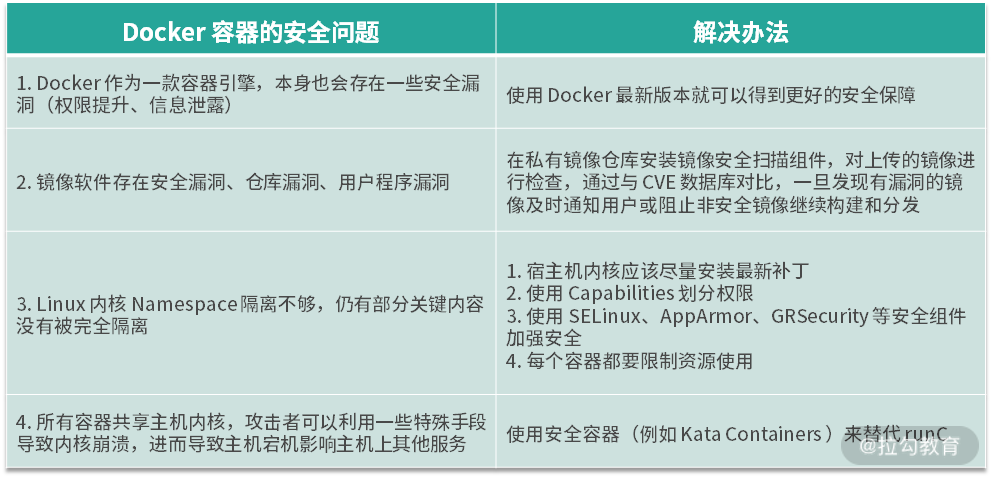

- 00 溯本求源，吃透 Docker！.md.html
- 01 Docker 安装：入门案例带你了解容器技术原理.md.html
- 02 核心概念：镜像、容器、仓库，彻底掌握 Docker 架构核心设计理念.md.html
- 03 镜像使用：Docker 环境下如何配置你的镜像？.md.html
- 04 容器操作：得心应手掌握 Docker 容器基本操作.md.html
- 05 仓库访问：怎样搭建属于你的私有仓库？.md.html
- 06 最佳实践：如何在生产中编写最优 Dockerfile？.md.html
- 07 Docker 安全：基于内核的弱隔离系统如何保障安全性？.md.html
- 08 容器监控：容器监控原理及 cAdvisor 的安装与使用.md.html
- 09 资源隔离：为什么构建容器需要 Namespace ？.md.html
- 10 资源限制：如何通过 Cgroups 机制实现资源限制？.md.html
- 11 组件组成：剖析 Docker 组件作用及其底层工作原理.md.html
- 12 网络模型：剖析 Docker 网络实现及 Libnetwork 底层原理.md.html
- 13 数据存储：剖析 Docker 卷与持久化数据存储的底层原理.md.html
- 14 文件存储驱动：AUFS 文件系统原理及生产环境的最佳配置.md.html
- 15 文件存储驱动：Devicemapper 文件系统原理及生产环境的最佳配置.md.html
- 16 文件存储驱动：OverlayFS 文件系统原理及生产环境的最佳配置.md.html
- 17 原理实践：自己动手使用 Golang 开发 Docker（上）.md.html
- 18 原理实践：自己动手使用 Golang 开发 Docker（下）.md.html
- 19 如何使用 Docker Compose 解决开发环境的依赖？.md.html
- 20 如何在生产环境中使用 Docker Swarm 调度容器？.md.html
- 21 如何使 Docker 和 Kubernetes 结合发挥容器的最大价值？.md.html
- 22 多阶级构建：Docker 下如何实现镜像多阶级构建？.md.html
- 23 DevOps：容器化后如何通过 DevOps 提高协作效能？.md.html
- 24 CICD：容器化后如何实现持续集成与交付？（上）.md.html
- 25 CICD：容器化后如何实现持续集成与交付？（下）.md.html
- 26 结束语 展望未来：Docker 的称霸之路.md.html
- 捐赠
07 Docker 安全：基于内核的弱隔离系统如何保障安全性？
在第 01 课时“Docker 安装：入门案例带你了解容器技术原理”中，我有介绍到 Docker 是基于 Linux 内核的 Namespace 技术实现资源隔离的，所有的容器都共享主机的内核。其实这与以虚拟机为代表的云计算时代还是有很多区别的，比如虚拟机有着更好的隔离性和安全性，而容器的隔离性和安全性则相对较弱。
在讨论容器的安全性之前，我们先了解下容器与虚拟机的区别，这样可以帮助我们更好地了解容器的安全隐患以及如何加固容器安全。
Docker 与虚拟机区别

从图 1 可以看出，虚拟机是通过管理系统(Hypervisor)模拟出 CPU、内存、网络等硬件，然后在这些模拟的硬件上创建客户内核和操作系统。这样做的好处就是虚拟机有自己的内核和操作系统，并且硬件都是通过虚拟机管理系统模拟出来的，用户程序无法直接使用到主机的操作系统和硬件资源，因此虚拟机也对隔离性和安全性有着更好的保证。
而 Docker 容器则是通过 Linux 内核的 Namespace 技术实现了文件系统、进程、设备以及网络的隔离，然后再通过 Cgroups 对 CPU、 内存等资源进行限制，最终实现了容器之间相互不受影响，由于容器的隔离性仅仅依靠内核来提供，因此容器的隔离性也远弱于虚拟机。
你可能会问，既然虚拟机安全性这么好，为什么我们还要用容器呢？这是因为容器与虚拟机相比，容器的性能损耗非常小，并且镜像也非常小，而且在业务快速开发和迭代的今天，容器秒级的启动等特性也非常匹配业务快速迭代的业务场景。
既然我们要利用容器的优点，那有没有什么办法可以尽量弥补容器弱隔离的安全性缺点呢？要了解如何解决容器的安全问题，我们首先需要了解下容器目前存在的安全问题。
Docker 容器的安全问题
(1) Docker 自身安全
Docker 作为一款容器引擎，本身也会存在一些安全漏洞，CVE 目前已经记录了多项与 Docker 相关的安全漏洞，主要有权限提升、信息泄露等几类安全问题。具体 Docker 官方记录的安全问题可以参考这里。
CVE 的维基百科定义：CVE 是公共漏洞和暴露（英语：CVE, Common Vulnerabilities and Exposures）又称常见漏洞与披露，是一个与信息安全有关的数据库，收集各种信息安全弱点及漏洞并给予编号以便于公众查阅。此数据库现由美国非营利组织 MITRE 所属的 National Cybersecurity FFRDC 所营运维护 。
(2) 镜像安全
由于 Docker 容器是基于镜像创建并启动，因此镜像的安全直接影响到容器的安全。具体影响镜像安全的总结如下。
- 镜像软件存在安全漏洞：由于容器需要安装基础的软件包，如果软件包存在漏洞，则可能会被不法分子利用并且侵入容器，影响其他容器或主机安全。
- 仓库漏洞：无论是 Docker 官方的镜像仓库还是我们私有的镜像仓库，都有可能被攻击，然后篡改镜像，当我们使用镜像时，就可能成为攻击者的目标对象。
- 用户程序漏洞：用户自己构建的软件包可能存在漏洞或者被植入恶意脚本，这样会导致运行时提权影响其他容器或主机安全。
(3) Linux 内核隔离性不够
尽管目前 Namespace 已经提供了非常多的资源隔离类型，但是仍有部分关键内容没有被完全隔离，其中包括一些系统的关键性目录（如 /sys、/proc 等），这些关键性的目录可能会泄露主机上一些关键性的信息，让攻击者利用这些信息对整个主机甚至云计算中心发起攻击。
而且仅仅依靠 Namespace 的隔离是远远不够的，因为一旦内核的 Namespace 被突破，使用者就有可能直接提权获取到主机的超级权限，从而影响主机安全。
(4) 所有容器共享主机内核
由于同一宿主机上所有容器共享主机内核，所以攻击者可以利用一些特殊手段导致内核崩溃，进而导致主机宕机影响主机上其他服务。
既然容器有这么多安全上的问题，那么我们应该如何做才能够既享受到容器的便利性同时也可以保障容器安全呢？下面我带你来逐步了解下如何解决容器的安全问题。
如何解决容器的安全问题？
(1) Docker 自身安全性改进
事实上，Docker 从 2013 年诞生到现在，在安全性上面已经做了非常多的努力。目前 Docker 在默认配置和默认行为下是足够安全的。
Docker 自身是基于 Linux 的多种 Namespace 实现的，其中有一个很重要的 Namespace 叫作 User Namespace，User Namespace 主要是用来做容器内用户和主机的用户隔离的。在过去容器里的 root 用户就是主机上的 root 用户，如果容器受到攻击，或者容器本身含有恶意程序，在容器内就可以直接获取到主机 root 权限。Docker 从 1.10 版本开始，使用 User Namespace 做用户隔离，实现了容器中的 root 用户映射到主机上的非 root 用户，从而大大减轻了容器被突破的风险。
因此，我们尽可能地使用 Docker 最新版本就可以得到更好的安全保障。
(2) 保障镜像安全
为保障镜像安全，我们可以在私有镜像仓库安装镜像安全扫描组件，对上传的镜像进行检查，通过与 CVE 数据库对比，一旦发现有漏洞的镜像及时通知用户或阻止非安全镜像继续构建和分发。同时为了确保我们使用的镜像足够安全，在拉取镜像时，要确保只从受信任的镜像仓库拉取，并且与镜像仓库通信一定要使用 HTTPS 协议。
(3) 加强内核安全和管理
由于仅仅依赖内核的隔离可能会引发安全问题，因此我们对于内核的安全应该更加重视。可以从以下几个方面进行加强。
宿主机及时升级内核漏洞
宿主机内核应该尽量安装最新补丁，因为更新的内核补丁往往有着更好的安全性和稳定性。
使用 Capabilities 划分权限
Capabilities 是 Linux 内核的概念，Linux 将系统权限分为了多个 Capabilities，它们都可以单独地开启或关闭，Capabilities 实现了系统更细粒度的访问控制。
容器和虚拟机在权限控制上还是有一些区别的，在虚拟机内我们可以赋予用户所有的权限，例如设置 cron 定时任务、操作内核模块、配置网络等权限。而容器则需要针对每一项 Capabilities 更细粒度的去控制权限，例如：
- cron 定时任务可以在容器内运行，设置定时任务的权限也仅限于容器内部；
- 由于容器是共享主机内核的，因此在容器内部一般不允许直接操作主机内核；
- 容器的网络管理在容器外部，这就意味着一般情况下，我们在容器内部是不需要执行
ifconfig、route等命令的 。
由于容器可以按照需求逐项添加 Capabilities 权限，因此在大多数情况下，容器并不需要主机的 root 权限，Docker 默认情况下也是不开启额外特权的。
最后，在执行docker run命令启动容器时，如非特殊可控情况，–privileged 参数不允许设置为 true，其他特殊权限可以使用 –cap-add 参数，根据使用场景适当添加相应的权限。
使用安全加固组件
Linux 的 SELinux、AppArmor、GRSecurity 组件都是 Docker 官方推荐的安全加固组件。下面我对这三个组件做简单介绍。
- SELinux (Secure Enhanced Linux): 是 Linux 的一个内核安全模块，提供了安全访问的策略机制，通过设置 SELinux 策略可以实现某些进程允许访问某些文件。
- AppArmor: 类似于 SELinux，也是一个 Linux 的内核安全模块，普通的访问控制仅能控制到用户的访问权限，而 AppArmor 可以控制到用户程序的访问权限。
- GRSecurity: 是一个对内核的安全扩展，可通过智能访问控制，提供内存破坏防御，文件系统增强等多种防御形式。
这三个组件可以限制一个容器对主机的内核或其他资源的访问控制。目前，容器报告的一些安全漏洞中，很多都是通过对内核进行加强访问和隔离来实现的。
资源限制
在生产环境中，建议每个容器都添加相应的资源限制。下面给出一些执行docker run命令启动容器时可以传递的资源限制参数：
--cpus 限制 CPU 配额
-m, --memory 限制内存配额
--pids-limit 限制容器的 PID 个数
例如我想要启动一个 1 核 2G 的容器，并且限制在容器内最多只能创建 1000 个 PID，启动命令如下：
$ docker run -it --cpus=1 -m=2048m --pids-limit=1000 busybox sh
推荐在生产环境中限制 CPU、内存、PID 等资源，这样即便应用程序有漏洞，也不会导致主机的资源完全耗尽，最大限度降低安全风险。
(4) 使用安全容器
容器有着轻便快速启动的优点，虚拟机有着安全隔离的优点，有没有一种技术可以兼顾两者的优点，做到既轻量又安全呢？
答案是有，那就是安全容器。安全容器是相较于普通容器的，安全容器与普通容器的主要区别在于，安全容器中的每个容器都运行在一个单独的微型虚拟机中，拥有独立的操作系统和内核，并且有虚拟化层的安全隔离。
安全容器目前推荐的技术方案是 Kata Containers，Kata Container 并不包含一个完整的操作系统，只有一个精简版的 Guest Kernel 运行着容器本身的应用，并且通过减少不必要的内存，尽量共享可以共享的内存来进一步减少内存的开销。另外，Kata Container 实现了 OCI 规范，可以直接使用 Docker 的镜像启动 Kata 容器，具有开销更小、秒级启动、安全隔离等许多优点。
结语
容器技术带来的技术革新是空前的，但是随之而来的容器安全问题也是我们必须要足够重视的。本课时解决 Docker 安全问题的精华我帮你总结如下：

到此，相信你已经了解了 Docker 与虚拟机的本质区别，也知道了容器目前存在的一些安全隐患以及如何在生产环境中尽量避免这些安全隐患。
© 2019 - 2023 Liangliang Lee. Powered by gin and hexo-theme-book.